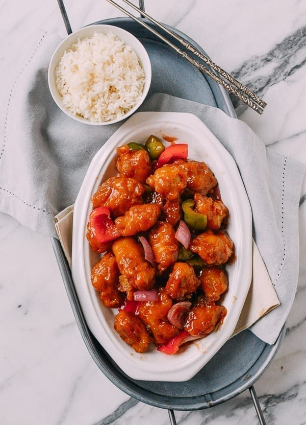

Sweet and Sour Chicken

Description
Battered and fried chunks of white or dark meat chicken tossed in a sweet and sour sauce. Despite being common in Chinese takeout restaurant the dish is more Western than Chinese.
Tips
Dark meat like thighs tends to stay more moist than white meat like breasts but it is personal preference. Regardless of meat type, marinating the meat properly is important and adding water keeps the chicken moist throughout the process. When frying the chicken lower the pieces one at a time slowly and half submerge them before letting go to prevent sticking to the pan or each other. Leftover oil can be filtered and reused for up to two weeks if stored in refrigerator. Start cooking the sauce immediately after frying chicken to prevent sogginess and keep the chicken crisp. Finally the chicken can be prepared in advance, just quickly refry to crisp the chicken back up and toss with sauce.
Ingredients
For Sauce
- 1/2 cup hot water
- 1/4 teaspoon salt
- 2 tablespoons sugar
- 1 tablespoon ketchup
- 1/2 cup pineapple juice
- 3 tablespoons rice wine vinegar (or red wine vinegar)
For Chicken
- 12 ounces boneless skinless breasts or thighs
- 1-2 tablespoons water
- 1/8 teaspoon garlic powder
- 1/4 teaspoon onion powder
- 1/2 teaspoon sesame oil
- 1/8 teaspoon white pepper
- 1/2 teaspoon salt
For Batter
- 3/4 cup all purpose flour
- 1 tablespoon cornstarch
- 3/4 teaspoon baking powder
- 3/4 teaspoon baking soda
- 2/3 cup ice water
- 1 tablespoon vegetable oil
For Remainder
- 2/3 cup canned pineapple chunks
- 1 tablespoon oil
- 1/4 cup red onion
- 1/4 cup red bell pepper
- 1/4 cup green bell pepper
- 2 tablespoons cornstarch
Directions
Start By Preparing Sauce
- Set aside ½ cup of pineapple juice from your can of pineapple, and reserve ⅔ cup of the pineapple chunks (if using). Set aside.
- Combine the hot water, salt, sugar, and ketchup. Stir until the salt and sugar are dissolved, and then add the vinegar and pineapple juice (if using). If not using pineapple juice, replace with ½ cup water or chicken stock. Set aside.
Marinate the Chicken
- Add 1 tablespoon of water.
- Cut your chicken into uniform 1 inch chunks (for even cooking) and place into a bowl. Add the garlic and onion powders, sesame oil, white pepper and salt. Mix until all pieces are uniformly coated, and let it sit for 5 minutes. Any excess water should be fully absorbed by the chicken. If not, mix the chicken again and let it sit for another 5 minutes.
Make the Batter
- Mix together the all-purpose flour, cornstarch, baking powder, and baking soda in a bowl, and add 2/3 cup of ice water. Use a fork to mix until a batter is formed, and stir in 1 tablespoon of oil. Set aside.
Fry the Chicken
- The amount of oil you need depends on the size of the pot you will use. Using a larger pot uses more oil, but allows you to cook the chicken in fewer batches. Using a smaller pot uses less oil, but you’ll have to fry more batches of chicken. We usually go for a smaller pot, so we have less leftover oil. Heat the oil in a small pot until it reaches 335 degrees F.
- Place 5 to 6 pieces of marinated chicken into the batter. Use a chopstick, fork, or your fingers to coat the chicken in the batter and place each piece slowly into the oil.
- Use a slotted spoon to carefully turn the chicken so all sides are uniformly fried. Fry for about 2 minutes, or until the batter is a light golden brown and crispy. Remove with a slotted spoon and let any excess oil drain off before placing onto a rack or paper towel lined plate.
Assemble in the Wok
- Heat 1 tablespoon canola oil in a wok over medium high heat, and add the red onion and peppers. Stir-fry for 30 seconds.
- Next, add the sweet and sour sauce you prepared earlier and bring to a boil. Reduce the heat so the sauce is simmering.
- Stir up your cornstarch slurry until it is uniform. While stirring the sweet and sour sauce, drizzle the slurry into the sauce. The sauce should be thick enough to coat a spoon. Turn down the heat and give the sauce a quick taste––now is the time to add more salt, vinegar or sugar if desired.
- Add the pineapple chunks (if using) and stir until warmed through. Now is the time to refry the chicken to make them nice and crispy. Heat the oil up to 335 degrees F and fry the chicken in two batches for about 45 seconds each time and they will crisp right up again. Then add the chicken pieces to your sauce, and gently toss with your wok spatula until the chicken is coated. Serve immediately!
Source
The Woks of Life